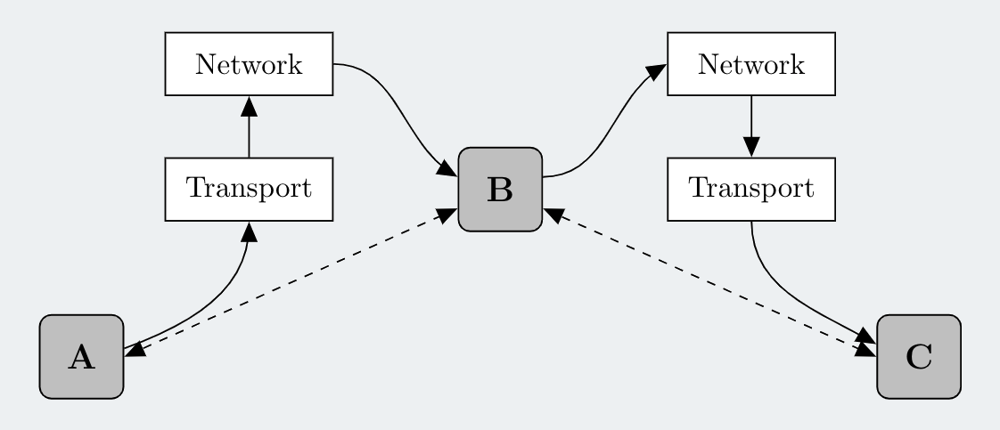

Introduction¶
What is QuNetSim?¶
QuNetSim (Quantum Network Simulator) is a Python based simulation framework for quantum networking simulations. The intended use is that one can develop and test applications and protocols designed for quantum networks on the network and application layer that can transmit and store quantum information. QuNetSim offers a framework for developing such protocols that use typical quantum network features such as teleportation and EPR generation over multi-hop quantum networks that may require potentially complicated routes.
One of QuNetSim’s core features is that it comes with common networking tasks already developed. Some examples of such tasks are teleporting qubits, distributing entanglement, sending superdense coded messages, and generating secret keys with quantum key distribution. The full list of applications built into QuNetSim can be found in the Host section in the Design Overview. QuNetSim requires routes to exist in the created network in order to transmit information from one node to another. For example, if a Host A is connected to a Host C via a Host B, then all information is routed through be. QuNetSim even uses an entanglement swapping procedure to generate entanglement between distantly connected (i.e. multi-hop) hosts.
Another feature of QuNetSim is that one can write custom routing functions. QuNetSim uses graphs to represent the network, specifically the Python library networkx, to generate its network structures (i.e. one for classical and one for quantum). In QuNetSim, one can create in a sense, two networks, one for classical communications and one for quantum communications. This allows the user to develop and test their own routing algorithms with flexibility, based on both the classical and quantum network states. We provide a simple example of routing based on the amount of entanglement already generated in the Examples section.
QuNetSim is an event-driven simulation. Events are happening asynchronously at arbitrary times, and it is sometimes up to the user to develop robust protocols to avoid out of order arrivals at the hosts. We provide some features to help with this, for example, packets come with a sequence number and also one can choose to block a thread until an acknowledgement is returned.
QuNetSim treats a quantum network like a classical network, in that it uses a network layering architecture. In the image below we demonstrate the layered structure. The two different coloured lines connecting the layers represent a quantum and classical connection, which means that quantum information and classical information are treated the same way. A host triggers an application that requires communication, the information from the application is packetized and then put into the network. The packet will be moved around in the network, unknown to the host, and once it arrives at its destination, an the sending host will know the state of the packet once an acknowledgement arrives.

In the below image, we see how QuNetSim routes packets. A packet initiated at Host A gets put into the network through a transport layer. The network moves the packet through Host B who processes it as a network packet and simply relays it onward. The packet arrives at Host C who then recovers the payload of the packet, being either quantum or classical which is handled by the transport layer and then added to the correct memory of Host C who can then access it.
{kind=link}
Who should use QuNetSim?¶
QuNetSim is still a work in progress and in its current state, it is more of a toy example to demonstrate and create quantum networking protocols at a high level that could potentially make their way into real applications for quantum networks. QuNetSim, presently, is not designed to accurately simulate quantum physics and therefore we make some assumptions and use potentially unrealistic methods for achieving the things we want to do with quantum network simulations. The intended user of QuNetSim is therefore mainly those who want to learn more about quantum networks but are relatively new to it. Generally students and instructors could use it to demonstrate some quantum networking protocols at a high level. QuNetSim gives detailed logs regarding protocols that are built in, and one can trace step by step what is happening when, for example, one host teleports a qubit to another.
Although we do inspire to develop QuNetSim to be as realistic as possible in future iterations, at the moment, we consider QuNetSim an educational tool and not a full blown quantum network simulator.